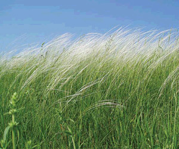

Просторову диференціацію степової рослинності визначають переважно умови грунтового зволоження, оскільки вони найбільш впливають на розвиток рослин. На привододілах в північній частині регіону характерними видами є: ковила Лессінга (Stipa lessingiana Trin et Rupr.), ковила волосиста (Stipa capillata L.), костриця валіська (Festuca valesiaca Gaud.), тонконіг вузьколистий (Poa angustifolia L.), келерія гребінчаста (Koeleria cristata (L.) Pers.). Із бобових зустрічається люцерна румунська (Medicago romanica Prod.), в'язіль барвистий (Coronilla varia L.), конюшина гірська (Trifolium montanum L.) і альпійська (T. alpestre L.), зіновать руська (Camaecytisus ruthenicus (Fisch et Woloszcz.) Klaskova).
Із різнотрав'я переважають молочай степовий (Euphorbia stepposa Zoz.), підмаренник руський (Galium ruthenicum L.), смілка зеленувата (Silene coringiifolia Andrz.), чабрець Маршалів (Thymus marashalianus Willd.) і двовидний (T. dimorphus Klok. et Shost.), гадючник звичайний (Filipendula vulgaris Moench.), гвоздика вугільна (Dianthus carbonatus Klok.).
На схилах зі змитими грунтами характерними є такі види: ковила волосиста, костриця валіська, тонконіг бульбистий (P. bulbosa L.), шавлія поникла (Salvia nutans L.), бородач звичайний (Botryochloa ischaemum (L.) Keng.), зміївка болгарська (Cleistogenes bulgarica (Bornm). Keng), деревій благородний (Achillea nobilis L.), котяча м'ята дрібноквіткова (Nepeta parviflora Bieb.), молочай Сегієрів (Euphorbia segueriana Neck.) і степовий (E.stepposa Zoz), сухоребрик мінливий (Sisymbrium polymorphum (Murr.) Roth.), полин австрійський (Artemisia austriaca Jacd.).
